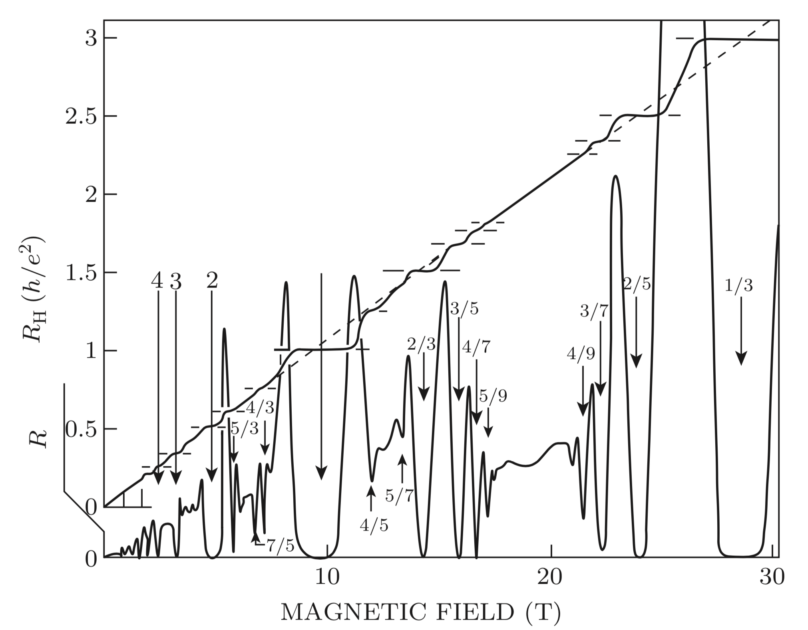
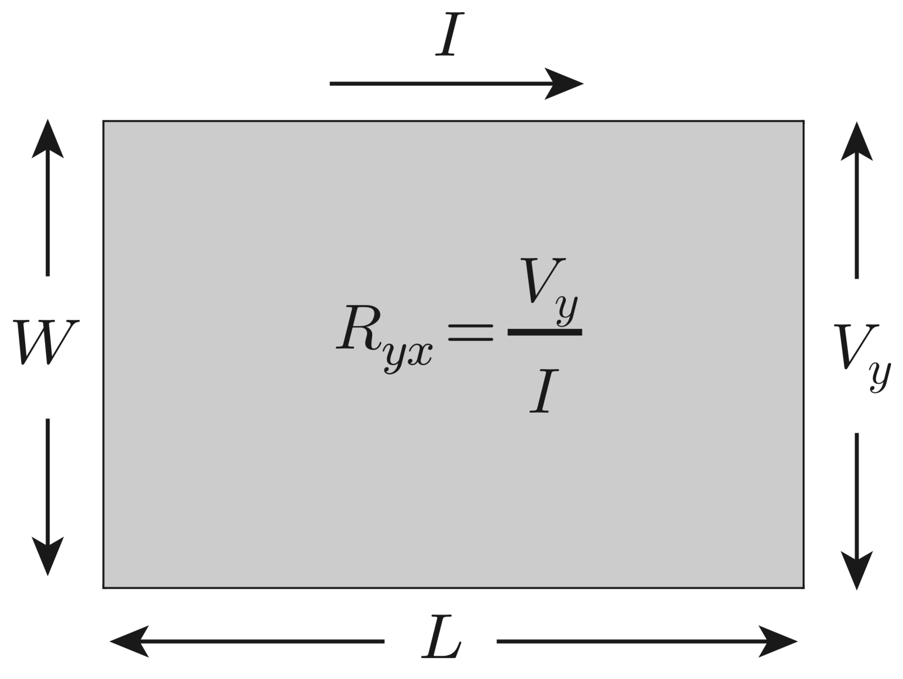
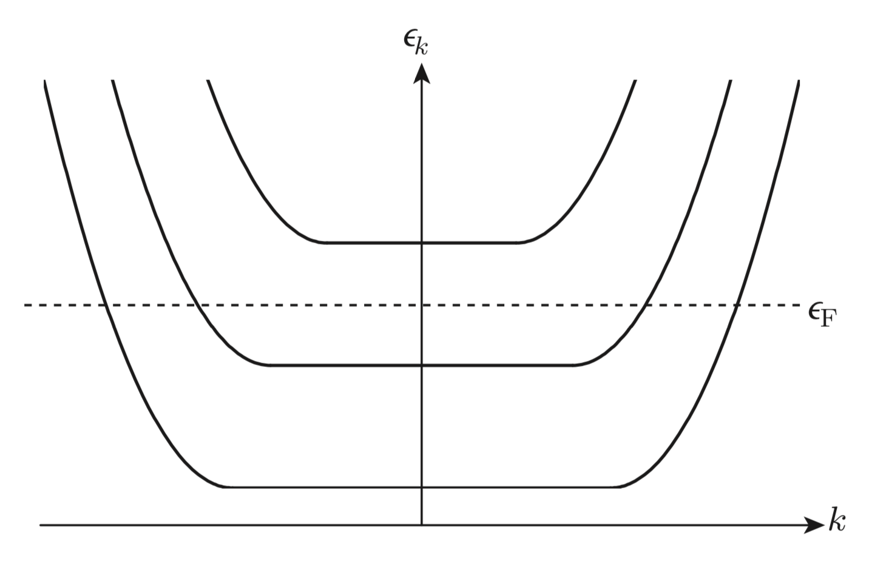
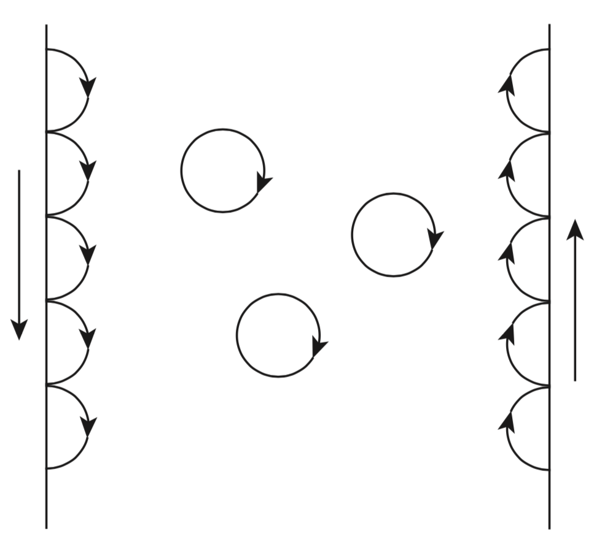

Integer Quantum Hall Effect
Independent Electron Model
\begin{equation}\mathcal{H}\Phi_n(\vec{r}_1,...,\vec{r}_N) = E_n\Phi_n(\vec{r}_1,...,\vec{r}_N)\qquad\qquad(7.25)\end{equation}
\begin{equation}\mathcal{H} = \sum_{i=1}^N\left(\frac{-\hbar^2\nabla_i^2}{2m_e}-\sum_I\frac{e^2Z}{|\vec{r}_i-\vec{R}_I|}\right)+\frac{1}{2} \sum_{i\neq j}^N\frac{e^2}{|\vec{r}_i-\vec{r}_j|}\qquad\qquad(7.26)\end{equation}
It is frequently a good approximation to replace `\mathcal{H}` by an effective independent-particle Hamiltonian
\begin{equation}\mathcal{H} = \sum_{i=1}^N H_i= \sum_{i=1}^N\left(\frac{-\hbar^2\nabla_i^2}{2m_e} + v_{eff}(\vec{r}_i)\right)\qquad\qquad(7.27)\end{equation}
`v_{eff}` is some sort of effective potential which includes the interaction of an electron with the nuclei and represents in some average way the interaction of an electron with all other electrons.
The most naive case is one where `v_{eff}=0`. This leaves us with the so-called free-electron-gas model. In this model the single-particle states are plane waves, which can be labeled by a wave vector,
\begin{equation}\langle \vec{v}|\vec{k}\rangle =\frac{1}{\sqrt{L^3}}exp(i\vec{k}\cdot\vec{r}) \qquad\qquad(7.28)\end{equation}
These plane waves have eigenenergy and are eigenstates of the velocity operator with eigenvalue `\hbar\vec{k}/m_e`.
\begin{equation} \epsilon_{\vec{k}} =\frac{\hbar^2k^2}{2m_e} \qquad\qquad(7.29)\end{equation}
\begin{equation} \vec{V} = \frac{d\vec{r}}{dt} = \frac{i}{\hbar}[H,\vec{r}] = \frac{i}{2m_e\hbar}[\vec{p}\cdot\vec{p},\vec{r}] = \frac{i}{m_e\hbar}\vec{p}(-i\hbar) = \frac{\vec{p}}{m_e} = \frac{-i\hbar\nabla}{m_e} \qquad\qquad(7.30)\end{equation}
The next-simplest model, sometimes called the independent-particle model, uses
\begin{equation} v_{eff} = V(\vec{r}) \qquad\qquad(7.31)\end{equation}
where V is a periodic potential with the symmetries of the crystalline lattice:
\begin{equation} v_{eff} = V(\vec{r}) \qquad\qquad(7.32)\end{equation}
where `\vec{R}_j` is a lattice vector of the crystal.
Bloch's Theorem
Now `V(\vec{r})` (and hence H ) has the translation symmetry of the lattice:
\begin{equation} V(\vec{r}+\vec{a}_j) = V(\vec{r})\qquad\qquad(7.35)\end{equation}
Let us start with the simplest possible case, `V(\vec{r})=constant`. In this case
\begin{equation} [H,T_{\vec{l}}] = 0 \qquad\qquad(7.37)\end{equation}
\begin{equation} T_{\vec{l}} = e^{i\vec{p}\cdot\vec{l}/\hbar} \qquad\qquad(7.38)\end{equation}
When `V(\vec{r})` is not a constant, we have
\begin{equation} [H,T_{\vec{a}_j}] = 0 \qquad\qquad(7.37)\end{equation}
That is, we can choose our energy eigenstates `\psi` to be eigenstates of `\{T_j\}`
\begin{equation} T_j\psi = \lambda_j\psi \qquad\qquad(7.45)\end{equation}
If we now invoke periodic boundary conditions
\begin{equation} \psi(\vec{r}+M\vec{a}_j) = \psi(\vec{r}) \qquad\qquad(7.46)\end{equation}
where M is a large integer, then we must have
\begin{equation} \lambda_j^M=1 \qquad\qquad(7.47)\end{equation}
This means that
\begin{equation} \lambda_j = e^{i\vec{k}\cdot\vec{a}_j} \qquad\qquad(7.48)\end{equation}
where `\vec{k}` is one of the usual wave vectors allowed in a periodic system,
\begin{equation} \vec{k} = \frac{\vec{G}}{M} \qquad\qquad(7.49)\end{equation}
A function `\rho(\vec{R})` that has the translation symmetry of the lattice satisfies
\begin{equation} \rho(\vec{R}) = \rho(\vec{R}+\vec{R}_{\vec{n}}) \qquad\qquad(3.21)\end{equation}
where `\vec{R}_{\vec{n}}` is a lattice vector
\begin{equation} \vec{R}_{\vec{n}} = n_1\vec{a}_1 + n_2\vec{a}_2 + n_3\vec{a}_3 \qquad\qquad(3.15)\end{equation}
One way to construct such a periodic function is
\begin{equation} \rho(\vec{R}) = \sum_{\{\vec{G}\}} \widetilde{\rho}_{\vec{G}} e^{i\vec{G}\cdot\vec{R}} \qquad\qquad(3.23)\end{equation}
where the set of wave vectors `\{\vec{G}\}` is determined from the periodicity condition (3.21)
\begin{equation} e^{ i\vec{G}\cdot(\vec{R}_\vec{n}) } = e^{ i\vec{G}\cdot(n_1\vec{a}_1 + n_2\vec{a}_2 + n_3\vec{a}_3) } = 1 \qquad\qquad(3.24)\end{equation}
which means
\begin{equation} \vec{G}\cdot\vec{a}_j = 2\pi m_j,\qquad j=1,2,3 \qquad\qquad(3.25)\end{equation}
It follows that the most general solution of the periodic Schrödinger equation is
\begin{equation} \psi_{\vec{k}}(\vec{r}) = e^{i\vec{k}\cdot\vec{r}}u_{\vec{k}}(\vec{r}) \qquad\qquad(7.50)\end{equation}
where
\begin{equation} u_{\vec{k}}(\vec{r}+\vec{a}_{j}) = u_{\vec{k}}(\vec{r}),\qquad j=1,2,3 \qquad\qquad(7.51)\end{equation}
It is straightforward to see that Eq. (7.50) is the most general form consistent with Eqs. (7.45) and (7.48). This is known as Bloch’s theorem.
For the more general case, we can draw on our experience from Eq.(3.23) \begin{equation} u_{\vec{k}}(\vec{r}) = \sum_{\{\vec{G}\}}a_{\vec{G}}(\vec{k})e^{i\vec{G}\cdot\vec{r}} \qquad\qquad(7.54)\end{equation} \begin{equation} \psi_{\vec{k}}(\vec{r}) = \sum_{\{\vec{G}\}}a_{\vec{G}}(\vec{k})e^{i(\vec{k}+\vec{G})\cdot\vec{r}} \qquad\qquad(7.55)\end{equation} we can restrict the wave vector `\vec{k}` to the first Brillouin zone. \begin{equation}\psi_{\vec{k}}(\vec{r}) = \sum_{\{\vec{G}\}} b_{\vec{G}}(\vec{k})e^{i(\vec{k}+\vec{G}'+\vec{G})\cdot\vec{r}}\end{equation} We can always choose `\vec{G}'` so that `\vec{k}'` lies in the first Brillouin zone. Thus we can always write the wave functions in the form \begin{equation} \psi_{n\vec{k}'}(\vec{r}) = e^{i\vec{k}'\cdot\vec{r}}u_{n\vec{k}'}(\vec{r}) \qquad\qquad(7.58)\end{equation} where `\vec{k}'` is restricted to the first Brillouin zone, and use the integer label n, known as the band index, to make up for this restriction. From Eq.(7.58) \begin{equation} \vec{p}\psi_{n\vec{k}} = e^{i\vec{k}\cdot\vec{r}}(\vec{p}+\hbar\vec{k})u_{n\vec{k}} \qquad\qquad(7.63)\end{equation} the Schrodinger equation can be rewritten as \begin{equation} \left[ \frac{1}{2m}(\vec{p}+\hbar\vec{k})^2 + V(\vec{r}) \right]u_{n\vec{k}}(\vec{r}) = \epsilon_{n\vec{k}}u_{n\vec{k}}(\vec{r}) \qquad\qquad(7.64)\end{equation} Now notice that the equation need only be solved within a single unit cell because of the periodicity of `u_{n\vec{k}}'` 1D empty-lattice example \begin{equation} \frac{1}{2m} (p+\hbar k)^2 u_{nk}(x) = \epsilon_{nk}u_{nk}(x) \qquad\qquad(7.66)\end{equation} with periodic boundary condition \begin{equation} u_{nk}\left( -\frac{a}{2} \right) = u_{nk}\left( +\frac{a}{2} \right);\quad u'_{nk}\left( -\frac{a}{2} \right) = u'_{nk}\left( +\frac{a}{2} \right) \qquad\qquad(7.67)\end{equation} the solution is \begin{equation} u_{nk}(x) = \sqrt(\frac{1}{a})e^{-inG_1 sgn(k)x} \qquad\qquad(7.68)\end{equation} Consider the case of a weak periodic potential of the form \begin{equation} \frac{1}{2m}(p+\hbar k + V(x))^2 u_{nk}(x) = \epsilon_{nk}u_{nk}(x) \qquad\qquad(7.66)\end{equation} \begin{equation} V(x) = vcos(G_1x) = \frac{v}{2}(e^{i2\pi x/a}+e^{-i 2\pi x/a}) \qquad\qquad(7.69)\end{equation} where `G_1 = \frac{2\pi}{a}`
For the more general case, we can draw on our experience from Eq.(3.23) \begin{equation} u_{\vec{k}}(\vec{r}) = \sum_{\{\vec{G}\}}a_{\vec{G}}(\vec{k})e^{i\vec{G}\cdot\vec{r}} \qquad\qquad(7.54)\end{equation} \begin{equation} \psi_{\vec{k}}(\vec{r}) = \sum_{\{\vec{G}\}}a_{\vec{G}}(\vec{k})e^{i(\vec{k}+\vec{G})\cdot\vec{r}} \qquad\qquad(7.55)\end{equation} we can restrict the wave vector `\vec{k}` to the first Brillouin zone. \begin{equation}\psi_{\vec{k}}(\vec{r}) = \sum_{\{\vec{G}\}} b_{\vec{G}}(\vec{k})e^{i(\vec{k}+\vec{G}'+\vec{G})\cdot\vec{r}}\end{equation} We can always choose `\vec{G}'` so that `\vec{k}'` lies in the first Brillouin zone. Thus we can always write the wave functions in the form \begin{equation} \psi_{n\vec{k}'}(\vec{r}) = e^{i\vec{k}'\cdot\vec{r}}u_{n\vec{k}'}(\vec{r}) \qquad\qquad(7.58)\end{equation} where `\vec{k}'` is restricted to the first Brillouin zone, and use the integer label n, known as the band index, to make up for this restriction. From Eq.(7.58) \begin{equation} \vec{p}\psi_{n\vec{k}} = e^{i\vec{k}\cdot\vec{r}}(\vec{p}+\hbar\vec{k})u_{n\vec{k}} \qquad\qquad(7.63)\end{equation} the Schrodinger equation can be rewritten as \begin{equation} \left[ \frac{1}{2m}(\vec{p}+\hbar\vec{k})^2 + V(\vec{r}) \right]u_{n\vec{k}}(\vec{r}) = \epsilon_{n\vec{k}}u_{n\vec{k}}(\vec{r}) \qquad\qquad(7.64)\end{equation} Now notice that the equation need only be solved within a single unit cell because of the periodicity of `u_{n\vec{k}}'` 1D empty-lattice example \begin{equation} \frac{1}{2m} (p+\hbar k)^2 u_{nk}(x) = \epsilon_{nk}u_{nk}(x) \qquad\qquad(7.66)\end{equation} with periodic boundary condition \begin{equation} u_{nk}\left( -\frac{a}{2} \right) = u_{nk}\left( +\frac{a}{2} \right);\quad u'_{nk}\left( -\frac{a}{2} \right) = u'_{nk}\left( +\frac{a}{2} \right) \qquad\qquad(7.67)\end{equation} the solution is \begin{equation} u_{nk}(x) = \sqrt(\frac{1}{a})e^{-inG_1 sgn(k)x} \qquad\qquad(7.68)\end{equation} Consider the case of a weak periodic potential of the form \begin{equation} \frac{1}{2m}(p+\hbar k + V(x))^2 u_{nk}(x) = \epsilon_{nk}u_{nk}(x) \qquad\qquad(7.66)\end{equation} \begin{equation} V(x) = vcos(G_1x) = \frac{v}{2}(e^{i2\pi x/a}+e^{-i 2\pi x/a}) \qquad\qquad(7.69)\end{equation} where `G_1 = \frac{2\pi}{a}`
Hall-Effect Transport in High Magnetic Fields
\begin{equation}J_\mu = \sigma_{\mu\nu}E_\nu\qquad\qquad(1)\end{equation}
\begin{equation}E_\mu = \rho_{\mu\nu}J_\nu\qquad\qquad(2)\end{equation}
For magnetic field `\vec{B} = B\hat{z}` and current density `\vec{J} = J\hat{x}`,
the requirement that the `\hat{y}` component of the electric force cancels out the corresponding
component of the Lorentz force (so that there is no current in the `\hat{y}` direction) yields
the standard classical expression for the Hall resistivity.
\begin{equation}\rho_{yx} = \frac{B}{nqc}\qquad\qquad(3)\end{equation}
Hall resitance RH & longicudinal resistance R vs. magnetic field
 Hall resistance RH
\begin{equation}R_H = \frac{V_y}{Ix} = \rho_{yx} = \frac{h}{\nu e^2}\qquad\qquad(4)\end{equation}
where `\nu` is a quantum number whose meaning will be made clear soon.
Associated with each of these plateaux is a dramatic decrease in the (dissipative) longitudinal resistance `R\propto \rho_{x x} \rightarrow 0` which drops by as much as 13 orders of magnitude in the plateau regions, in sharp contrast to the Drude theory.
we compare Eq.(3) and Eq.(4)
\begin{equation}R_H = \frac{B}{n e c} = \frac{h}{e^2}\frac{BA}{hc / e}\frac{1}{nA} = \frac{h}{e^2}\frac{\Phi}{\Phi_0}\frac{1}{N_e} = \frac{h}{e^2}\frac{N_\Phi}{N_e} \qquad \qquad (5)\end{equation}
where A is the area of the system, `N_e = nA` is the number of electrons, `\Phi = BA` is the flux enclosed in the system, and `\Phi_0 = \frac{hc}{e}` is the flux quantum, and `N_\Phi` is the number of flux quanta in the system.
we can identify the quantum number
\begin{equation}\nu = \frac{N_e}{N_\Phi} \qquad \qquad (6)\end{equation}
as the number of electrons per flux quantum in the system. For reasons that will become apparent, this ratio is commonly referred to as the (Landau-level) filling factor.
Why 2D is Important
resistivity(`\rho`) and resistance(R) for classical systems (in the shape of a hypercube) of size L are related by
\begin{equation}R = \rho L^{(2-d)}\qquad\qquad (7)\end{equation}
Two dimensions (2D) is therefore special since the resistance of the sample is scale-invariant. In 2D, R and `\rho` have the same dimensionality as `h \/ e^2`.
But R is still geometry-dependent.
\begin{equation}R = \rho \frac{L}{W}\qquad\qquad (8)\end{equation}
This factor is the aspect ratio L/W, a dimensionless geometric property of the sample (describing its shape but not its size).

The situation is very different in a Hall measurement. Assuming current flows in the horizontal (x) direction, we have
\begin{equation}R_{yx} = \frac{V_y}{I_x} = \frac{E_yW}{I_x} = \frac{E_y}{I_x / W} = \frac{E_y}{J_x} = \rho_{yx}\qquad\qquad (9)\end{equation}
Why Disorder and Localization Are Important
In our study of Anderson localization we found that in 2D all states are localized even for arbi- trarily weak disorder. The essence of this weak localization effect was shown to be the logarithmic divergence of the time integral of the current “echo” associated with the quantum interference corrections to classical transport. We further saw that these quantum interference effects relied crucially on the existence of time-reversal symmetry.
Thus the aspect ratio `L \/ W` (or any other geometric parameter) does not enter the relation between `R_{yx}` and `\rho_{yx}`. This is crucial to the universality of the result. In particular, it means that one does not have to measure the physical dimensions of the sample to one part in `10^{10}` in order to obtain the Hall resistivity to that precision.
Therefore, there is no need to distinguish between the Hall resistance and the Hall resistivity.
In the absence of any impurities, the 2D electron gas is translationally invariant and there does not exist any preferred frame of reference.
As a result, we can transform to a frame of reference moving with velocity `-\vec{v}` relative to the lab frame. In this frame the electrons appear to be moving at velocity `+\vec{v}` and carrying current density
\begin{equation}\vec{J} = -n e\vec{v}\qquad \qquad (10)\end{equation}
In the lab frame, the electromagnetic fields are
\begin{equation}\begin{matrix}\vec{E} = \vec{0}\\ \vec{B} = B\hat{z}\end{matrix} \qquad\qquad(11)\end{equation}
Lorentz transformation
\begin{equation}\begin{matrix}\frac{\vec{E}'}{c} = \gamma(\frac{\vec{E}}{c}+\vec{\beta}\times\vec{B}) - \frac{\gamma^2}{\gamma+1}\vec{\beta}(\vec{\beta}\cdot\frac{\vec{E}}{c})\\ \vec{B}' = \gamma(\vec{B}-\vec{\beta}\times\frac{\vec{E}}{c}) - \frac{\gamma^2}{\gamma+1}\vec{\beta}(\vec{\beta}\cdot\vec{B}) \end{matrix} \qquad\qquad(12)\end{equation}
In which, `\vec{\beta} = \frac{(-\vec{v})}{c}` and `\gamma = \frac{1}{\sqrt{1-\left(\frac{v}{c}\right)^2}}`. Since `\beta` is small，in moving frame, the electromagnetic fields are (to the lowest order in `\beta`)
\begin{equation}\begin{matrix}\vec{E} = -\vec{v}\times\vec{B}\\ \vec{B} = B\hat{z}\end{matrix} \qquad\qquad(13)\end{equation}
This Lorentz transformation picture is precisely equivalent to the usual statement that an electric field must exist which just cancels out the Lorentz force `-e\vec{v}\times\vec{B}` in order for the device to carry the current straight through.
Thus we have
\begin{equation}\vec{E} = \frac{B}{n e}\vec{J}\times\hat{B}\qquad\qquad(14)\end{equation}
The resistivity and conductivity tensors are respectively defined by Eq.(1) and Eq.(2), and from Eq.(4) we have
\begin{equation} \rho = \frac{B}{ne}\left(\begin{matrix} 0 & 1\\ -1& 0\end{matrix}\right) \qquad\qquad(15)\end{equation}
\begin{equation} \sigma = \frac{ne}{B}\left(\begin{matrix} 0 & -1\\ 1& 0\end{matrix}\right) \qquad\qquad(16)\end{equation}
Notice that, paradoxically, the system looks insulating since `\sigma_{x x} =0 ` and yet it also looks like a perfect conductor since `\rho_{x x} = 0`.
Classical and Semiclassical Dynamics
\begin{equation}\begin{matrix}m_e \ddot{x} = -\frac{eB}{c}\dot{y}\\m_e \ddot{y} = \frac{eB}{c}\dot{x} \end{matrix}\qquad\qquad(17)\end{equation}
The general solution
\begin{equation}\vec{r} = R[cos(\omega_c t+\delta),sin(\omega_c t+\delta)]\qquad\qquad(18)\end{equation}
`\delta` is an arbitrary phase. And the classical cyclotron frequency is
\begin{equation}\omega_c= \frac{eB}{m_ec}\qquad\qquad(19)\end{equation}
tangential speed controls the radius.
\begin{equation}v =R\omega_c\qquad\qquad(20)\end{equation}
For a nonrelative classical electron, the Lagrangian is
\begin{equation}\mathcal{L} =\frac{1}{2}m_e\dot{x}^\mu\dot{x}^\mu - e\dot{x}^\mu A^\mu\qquad\qquad(21)\end{equation}
Euler-Lagrange equation of motion
\begin{equation}m_e\ddot{x}^\nu = -e[\partial_\nu A^\mu-\partial_\mu A^\nu]\dot{x}^\mu\qquad\qquad(22)\end{equation}
Canonical momentum
\begin{equation}p^\mu = m_e \dot{x}^\mu-eA^\mu\qquad\qquad(23)\end{equation}
Hamiltonian
\begin{equation}H = \frac{1}{2m_e}\left(p^\mu+eA^\mu\right)^2\qquad\qquad(24)\end{equation}
we considered wave packets `\Psi_{\vec{R}(t),\vec{K}(t)}(\vec{r},t)` made up of a linear superposition of Bloch waves. These packets are large on the scale of the de Broglie wavelength so that they have a well-defined central wave vector `\vec{K}(t)`, but small on the scale of everything else (external potentials, etc.) so that they simultaneously can be considered to have well-defined mean position `\vec{R}(t)`. We then argued that the solution of the Schrödinger equation in this semiclassical limit gives a wave packet whose parameters `\vec{K}(t)` and `\vec{R}(t)` obey the appropriate analog of the classical Hamilton equations of motion,
\begin{equation}\dot{R}^\mu = \frac{\partial \langle \Psi_{\vec{R},\vec{K}}|H| \Psi_{\vec{R},\vec{K}}\rangle}{\partial(\hbar K^\mu)}\qquad\qquad(25)\end{equation}
\begin{equation} \hbar\dot{K}^\mu = \frac{\partial \langle \Psi_{\vec{R},\vec{K}}|H| \Psi_{\vec{R},\vec{K}}\rangle}{\partial R^\mu} \qquad\qquad(26)\end{equation}
For weak fields and fast electrons, the radius of these circular orbits will be large compared with the size of the wave packets, and the semiclassical approximation will be valid. However, at strong fields, the approximation begins to break down because the orbits are too small and because
Fermi energy becomes a significant (large) energy. Thus we anticipate that the semiclassical regime requires that the cyclotron energy be much smaller than the Fermi energy, \begin{equation}\hbar \omega_c \ll \epsilon_R\qquad\qquad(27)\end{equation}.
Quantum Dynamics in Strong B Fields
\begin{equation}\vec{A}(\vec{r}) = - xB\hat{y}\qquad\qquad(28)\end{equation}
The Hamiltonian can thus be written in the Landau gauge as
\begin{equation}H = \frac{1}{2m_e}\left[p_x^2+\left(p_y-eBx\right)^2\right] \qquad\qquad(29)\end{equation}
Taking advantage of the translation symmetry in the y direction, let us write the wave function in the form
\begin{equation} \psi_k(x,y) = e^{iky}f_k(x) \qquad\qquad(30)\end{equation}
Since it's an eigenstate of `p_y`, we can make the replacement
\begin{equation} h_kf_k(x)=\epsilon_kf_k(x) \qquad\qquad(31)\end{equation}
\begin{equation} h_k\equiv \frac{p_x^2}{2m_e}+\frac{1}{2m_e}\left(\hbar k-eBx\right)^2 \qquad\qquad(32)\end{equation}
This is simply a 1D displaced harmonic oscillator
\begin{equation} h_k\equiv \frac{p_x^2}{2m_e}+\frac{1}{2}m_e\omega_c^2\left(x-\frac{\hbar k}{eB}\right)^2 \qquad\qquad(33)\end{equation}
The central position \begin{equation}X_k = \frac{\hbar k}{eB}\end{equation} is determined by the y momentum quantum number.
Thus for each plane wave chosen for the y direction there will be an entire family of energy eigenvalues
\begin{equation} \epsilon_{kn} = \left(n+\frac{1}{2}\right)\hbar\omega \qquad\qquad(33)\end{equation}
The corresponding (unnormalized) eigenfunctions are
\begin{equation} \psi_{nk}(\vec{r}) = e^{iky}H_n\left( \sqrt{\frac{eB}{\hbar}}(x-\frac{\hbar k}{eB}) \right)e^{-\frac{eB}{2\hbar}\left(x-\frac{\hbar k}{eB}\right)^2} \qquad\qquad(33)\end{equation}
where `H_n` is the n-th Hermite polynomial displaced to the new central position `X_k`
These harmonic oscillator levels are called Landau levels.
We assume periodic boundary conditions in the y direction. Because of the vector potential, it is impossible to simultaneously have periodic boundary conditions in the x direction. However, since the basis wave functions are harmonic oscillator polynomials multiplied by strongly converging Gaussians, they rapidly vanish for positions away from the center position Xk.
Let us suppose that the sample is rectangular with dimensions `L_x`, `L_y`, and suppose that `0 < x < L_x`. Since the center position `X_k` inside the sample, we have
\begin{equation} 0 < \frac{\hbar k}{eB} < L_x\qquad\qquad(34)\end{equation}
Therefore, the total number of states in each Landau level
\begin{equation} N = \sum_k 1 = \int_{0}^{\frac{ eB L_x}{\hbar}} \frac{L_y}{2\pi}dk =\frac{eB L_xL_y}{h} = N_\Phi \qquad\qquad(35)\end{equation}
is the number of flux quanta penetrating the sample.
where `\Phi_0=\frac{h}{e}`, and `N_\Phi = \frac{\Phi}{\Phi_0}`.
Thus there is one state per Landau level per flux quantum. As a result, when the filling factor `\nu` of Eq. (6) takes an integer value, we have in the ground state exactly `\nu` (lowest-energy) Landau levels completely filled, and all higher Landau levels empty.
Such a state is clearly special, as there is a gap for excitations in the bulk.
The spacing between the centers
\begin{equation}\Delta = \frac{\hbar\Delta_k}{eB} = \frac{h}{eBL_y}\qquad\qquad(36) \end{equation}
When \begin{equation}x = \frac{\hbar k}{eB}\pm \sqrt{\frac{2\hbar}{eB}}\qquad\qquad(37)\end{equation}
The Gaussians value is 1/e of the value in the center position. We can contrast Eq.(36) and Eq.(37)
\begin{equation}\frac{\Delta x}{\Delta} = \sqrt{\frac{eB}{\hbar}}\frac{L_y}{\pi} \qquad\qquad(38) \end{equation}
It's a vastly large number, thus the different basis states are strongly overlapping.
Having now found the eigenfunctions for an electron in a strong magnetic field, we can relate them back to the semiclassical picture of wave packets undergoing circular cyclotron motion. Consider an initial semiclassical wave packet located at some position and having some specified mechanical momentum `\frac{h\vec{K}}{2\pi}`.
In the semiclassical limit, we have
\begin{equation}\left(n+\frac{1}{2}\right)\hbar\omega_c \sim \frac{\hbar^2 K^2}{2m_e}\qquad\qquad(39)\end{equation}
Hence this particle packet will be made up of a linear combination of a large number of different Landau-level states centered around
\begin{equation} \overline{n} = \frac{\hbar K^2}{2m_e\omega_c} \qquad\qquad(40)\end{equation}
\begin{equation} \begin{aligned}
\Psi(\vec{r},t) &= \frac{L_y}{2\pi}\sum_n\int dk a_n(k)\psi_{nk}(\vec{r})e^{-i\left(n+\frac{1}{2}\right)\omega_ct}\\
&= \frac{L_y}{2\pi}\sum_n\int dk a_n(k) e^{iky}H_n\left( \sqrt{\frac{eB}{\hbar}}(x-\frac{\hbar k}{eB}) \right)e^{-\frac{eB}{2\hbar}\left(x-\frac{\hbar k}{eB}\right)^2} e^{-i\left(n+\frac{1}{2}\right)\omega_ct}\\
\end{aligned} \qquad\qquad(41)\end{equation}
If one works through the details, one finds that the motion is indeed circular and corresponds to the expected semiclassical cyclotron orbit.
For simplicity we will restrict the remainder of our discussion mostly to the lowest Landau level
\begin{equation}\psi_k(\vec{r}) = \left(\frac{1}{\sqrt{\pi}lL_y}\right)^{\frac{1}{2}}e^{iky}e^{-\frac{1}{2l^2}\left(x-kl^2\right)^2}\qquad\qquad(42)\end{equation}
where \begin{equation}l = \sqrt{\frac{\hbar}{eB}}\qquad\qquad(43)\end{equation}
and every state has the same energy eigenvalue \begin{equation}\epsilon_k = \frac{1}{2}\hbar\omega_c\qquad\qquad(44)\end{equation}
the current density in the k-th basis state is
\begin{equation} \langle \vec{J}(x,y)\rangle = -\frac{e}{m_e}\psi_k^*(x,y)\left[-i\hbar\nabla +e\vec{A}(x,y) \right]\psi_k(x,y) \qquad\qquad(45)\end{equation}
\begin{equation} \begin{aligned}
\langle I_y \rangle &= -\frac{e}{m_e\sqrt{\pi}lL_y}\int_{-\infty}^{+\infty}dx\ e^{-\frac{1}{l^2}\left(x-kl^2\right)^2}\left[-i\hbar k - eBx \right] \\
&= -\frac{e\omega_c}{\sqrt{\pi}lL_y}\int_{-\infty}^{+\infty}dx\ e^{-\frac{1}{l^2}\left(x-kl^2\right)^2}(x-kl^2)) \\
\end{aligned} \qquad\qquad(46)\end{equation}
We see from the integrand that the current density is anti-symmetric about the peak of the Gaussian at `X_k = kl^2` and hence the total current vanishes. This anti-symmetry is the remnant of the semiclassical circular motion.
This could perhaps be anticipated from the observation that the energy of the Landau-level states is independent of the wave vector k, thus the group velocity is given by
\begin{equation} v_y=\frac{1}{\hbar}\frac{\partial \epsilon_{kn}}{\partial k} =0 \qquad\qquad(47)\end{equation}
Let us now consider the case of a uniform electric field pointing in the x direction and giving rise to the potential energy
\begin{equation} V(\vec{r})=eEx \qquad\qquad(48)\end{equation}
The Hamiltonian in Eq.(33) becomes
\begin{equation}\begin{aligned}
h_k &= \frac{p_x^2}{2m_e}+\frac{1}{2}m_e\omega_c^2(x-kl^2)^2+eEx \\
&= \frac{p_x^2}{2m_e}+\frac{1}{2}m_e\omega_c^2(x-kl^2)^2+eE(x-kl^2) +\frac{e^2E^2}{2m_e\omega_c^2}-\frac{e^2E^2}{2m_e\omega_c^2} +eEkl^2 \\
&= \frac{p_x^2}{2m_e}+\frac{1}{2}m_e\omega_c^2\left(x-kl^2+\frac{eE}{m_e\omega_c^2}\right)^2+\left(eEkl^2-m_e\left(\frac{eE}{m_e\omega_c}\right)^2\right)+\frac{1}{2}m_e\left(\frac{eE}{m_e\omega_c}\right)^2\\
&= \frac{p_x^2}{2m_e}+\frac{1}{2}m_e\omega_c^2\left(x-kl^2+\frac{eE}{m_e\omega_c^2}\right)^2+eE\left(kl^2-\frac{eE}{m_e\omega_c^2}\right)+\frac{1}{2}m_e\left(\frac{eE}{m_e\omega_c}\right)^2\\
\end{aligned}\qquad\qquad(49)
\end{equation}
we see that the oscillator is now centered at the new (and slightly shifted) position
\begin{equation} X_k' =kl^2-\frac{eE}{m_e\omega_c^2} = X_k-\frac{eE}{m_e\omega_c^2} \qquad\qquad(50)\end{equation}
and the energy eigenvalue
\begin{equation} \epsilon_{kn} =\left(n+\frac{1}{2}\right)\hbar\omega_c + eEX_k' + \frac{1}{2}m_e\overline{v}^2 \qquad\qquad(51)\end{equation}
where the drift velocity is `\overline{v}\equiv \frac{E}{B}`.
This result can be derived either by explicitly doing the integral for the current or by noting that the wave-packet group velocity is
\begin{equation}
\frac{1}{\hbar}\frac{\partial \epsilon_{kn}}{\partial k} = \frac{eE}{\hbar}\frac{\partial X_k'}{\partial k} = \frac{eE}{\hbar}\frac{\partial X_k}{\partial k} = \overline{v}\qquad\qquad(52)
\end{equation}
the perfect anti- symmetry of the current distribution is destroyed and there is a net current
\begin{equation} \begin{aligned}
\langle I_y \rangle &= -e\frac{\overline{v}}{L_y}
\end{aligned} \qquad\qquad(53)\end{equation}
Integer Quantum Hall Effect Edge State
\begin{equation} \vec{v}_k = \frac{1}{\hbar}\frac{\partial\epsilon_{kn}}{\partial k}\hat{y} \approx \frac{el^2}{\hbar}\left.\frac{d V(x)}{dx}\right|_{x = X_k}\hat{y}\qquad\qquad(56)\end{equation}
Landau-level dispersions in the presence of a confining potential, for a sample with Hall bar geometry
 This means that in the ground state there are edge currents of opposite sign flowing in the sample. The semiclassical interpretation of these currents is that they represent “skipping orbits” in which the circular cyclotron motion is interrupted by collisions with the walls at the edges. Because momentum in a magnetic field corresponds to position, the edges are essentially real-space realizations of the Fermi surface. A Hall voltage drop across the sample in the x direction corresponds to a difference in electrochemical potential between the two edges. This has the effect of increasing the number of electrons in skipping orbits on one edge of the sample and/or decreasing the number on the other edge. To calculate this current we have to add up the group velocities of all the occupied states,
\begin{equation}
I = -\frac{e}{L_y}\int_{-\infty}^{+\infty} dk \frac{L_y}{2\pi\hbar}\frac{\partial \epsilon_k}{\partial k}n_k
\qquad\qquad(57)\end{equation}
You are certainly puzzled about why there is not a '2' coeficient here, because there are two electrons in a state.
Noticing that the electrons are in a strong B field, so we should consider Zeeman splitting, which cause the a state split into two states.
Therefore, the states with `\epsilon_k` energy are actually two states with a little different energy around `\epsilon_k`. And we regard them as two different states, so there isn't a '2' coefficient in the Eq. (57).
where for the moment we assume that, in the bulk, only a single Landau level is occupied and nk is the probability that state k in that Landau level is occupied. Assuming zero temperature and noting that the integrand is a perfect derivative, we have
\begin{equation}
I = -\frac{e}{h}\int_{\mu_R}^{\mu_L} d\epsilon = -\frac{e}{h}[\mu_R-\mu_L]
\qquad\qquad(58)\end{equation}
The definition of the Hall voltage drop is
\begin{equation}
(-e)V_H = (-e)[V_R-V_L] = [\mu_R-\mu_L]
\qquad\qquad(59)\end{equation}
Hence
\begin{equation}
I = \nu \frac{e^2}{h}V_H
\qquad\qquad(60)\end{equation}
where we have now allowed for the possibility that `\nu` different Landau levels are occupied in the bulk and hence there are ν separate edge channels contributing to the current.
we have the desired results
\begin{equation} \begin{aligned}
&\sigma_{xx} = 0\\
&\sigma_{xy} = \nu\frac{e^2}{h}
\end{aligned}\qquad\qquad(61)\end{equation}
So far we have been ignoring the possible effects of disorder. Remarkably, in the QHE case, the backscat- tering is essentially zero in very wide samples. In the case of the Hall bar, scattering into a backward-moving state would require transfer of the electron from one edge of the sample to the other, since the edge states are spatially separated. In short, there can be nothing but forward scattering. An incoming wave given by Eq.(62)
\begin{equation}
\psi(x,y) = \frac{1}{\sqrt{L_y}} e^{iky}f_k(x) \qquad\qquad(62)\end{equation}
at most suffering a simple phase shift `\delta_k` as it continues forward:
\begin{equation}
\psi(x,y) = \frac{1}{\sqrt{L_y}} e^{i\delta_k}e^{iky}f_k(x) \qquad\qquad(63)\end{equation}
This is because no other states of the same energy are available.
Semiclassical Percolation Picture of the IQHE
(a) Low density, below the percolation threshold.
(b) At the percolation threshold.
(c) The electron distribution when the Fermi energy is above but very close to the percolation threshold. The grey area indicates the region occupied by electrons in the random potential. Backscattering between counter-propagating edge states becomes possible as they come close together in space, as indicated by the dashed line representing a quantum tunneling path connecting the two edges where they approach each other. The white regions in the interior are “mountain peaks” which are above “sea level” and therefore unoccupied by electrons. Their shorelines have finite length, and so local excitations have at least a small gap and cannot cause dissipation for weak electric fields at low frequencies.
(d) Above the percolation threshold.
Anomalous Integer Quantum Hall Sequence in Graphene
(a) Low density, below the percolation threshold.
(b) At the percolation threshold.
(c) The electron distribution when the Fermi energy is above but very close to the percolation threshold. The grey area indicates the region occupied by electrons in the random potential. Backscattering between counter-propagating edge states becomes possible as they come close together in space, as indicated by the dashed line representing a quantum tunneling path connecting the two edges where they approach each other. The white regions in the interior are “mountain peaks” which are above “sea level” and therefore unoccupied by electrons. Their shorelines have finite length, and so local excitations have at least a small gap and cannot cause dissipation for weak electric fields at low frequencies.
(d) Above the percolation threshold.